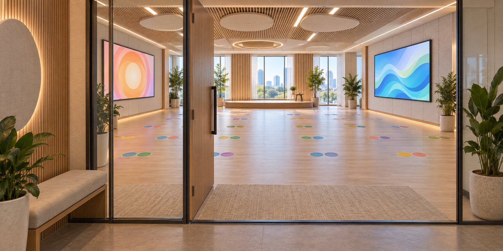
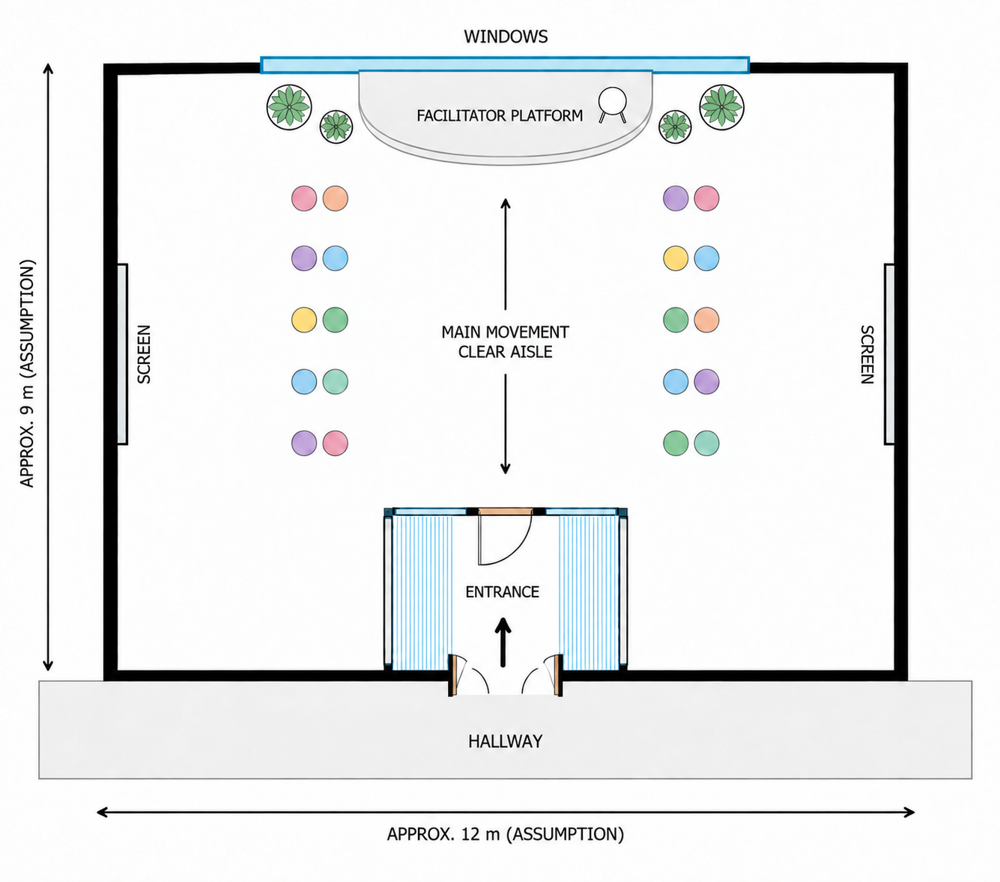
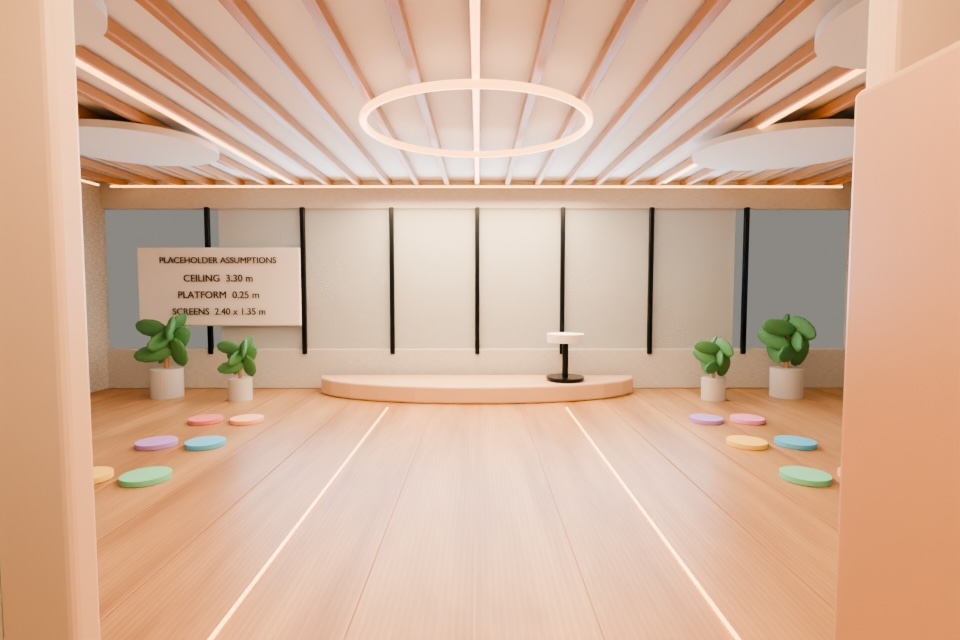
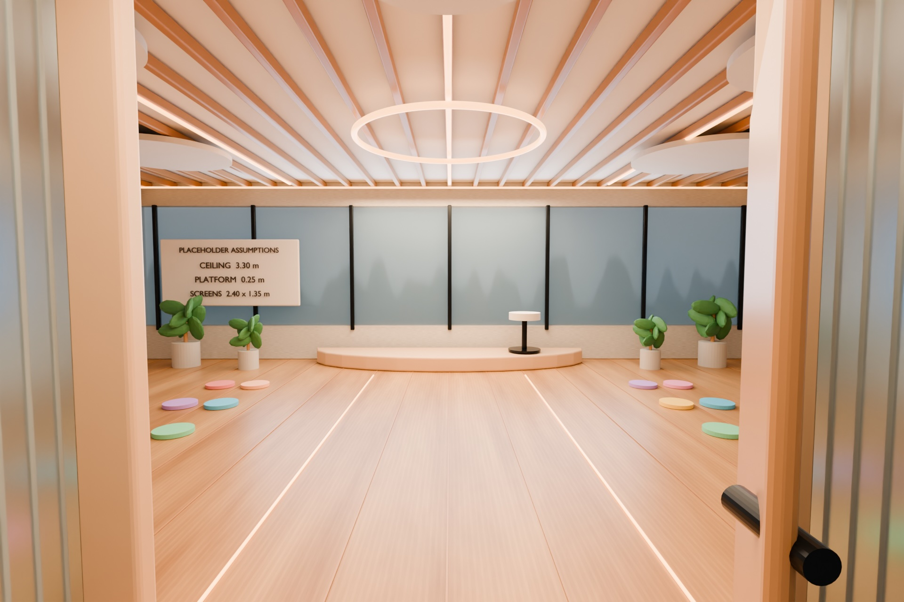
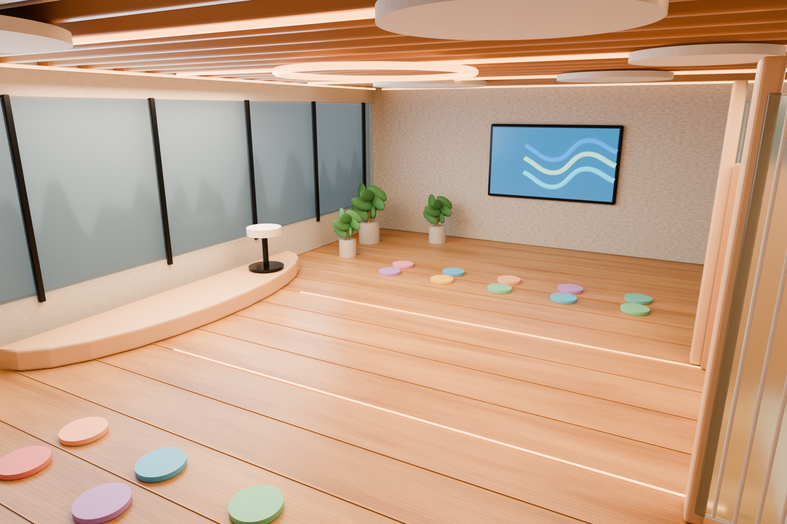
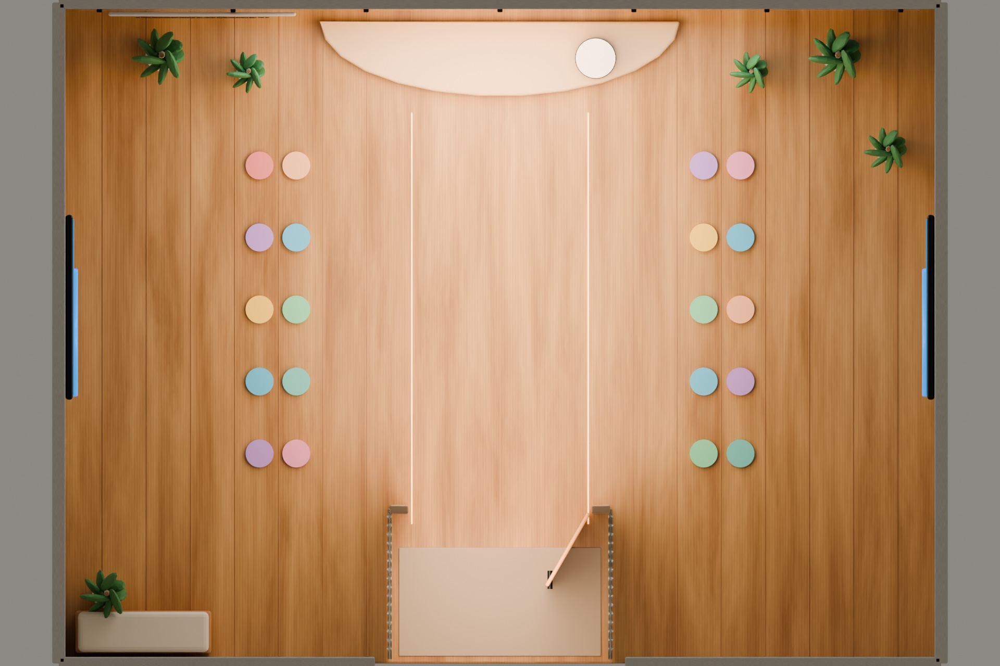

02 / Spatial design
Laughter Yoga
Studio 2036
Concept environment
Individual project
AI for Interdisciplinary Design
Arizona State University
Concept and development
From image to spatial plan



Final outcome
Final Blender stills


